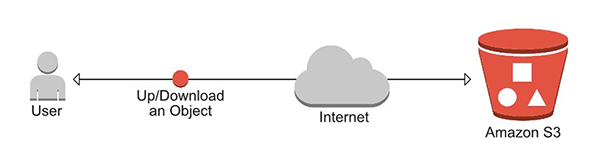
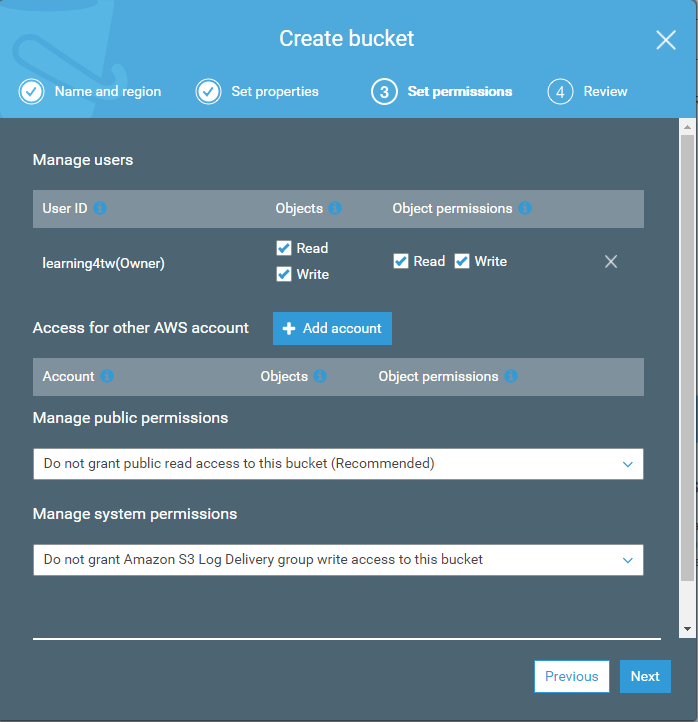
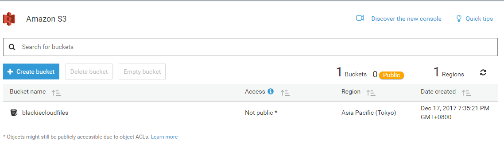
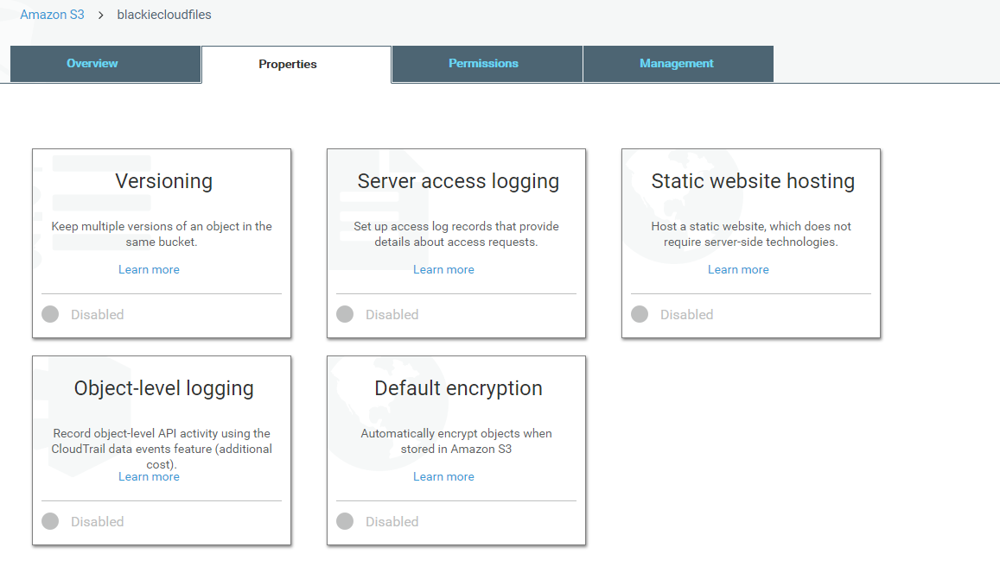
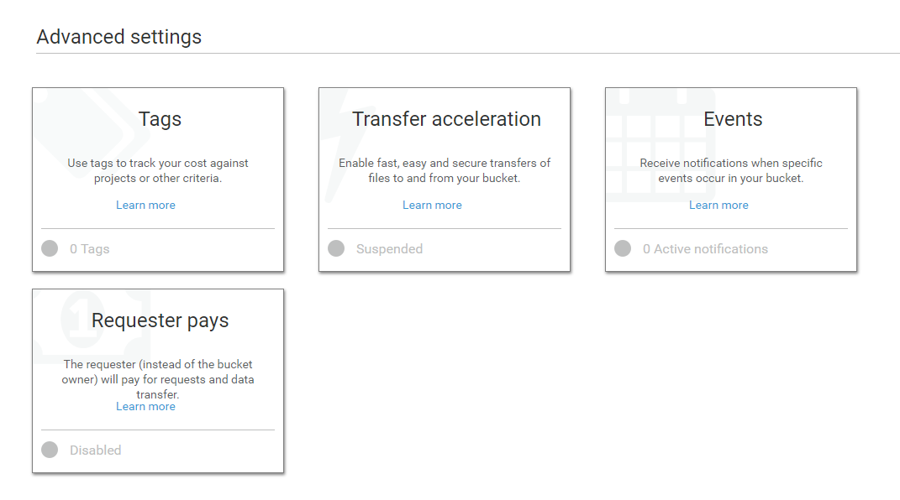
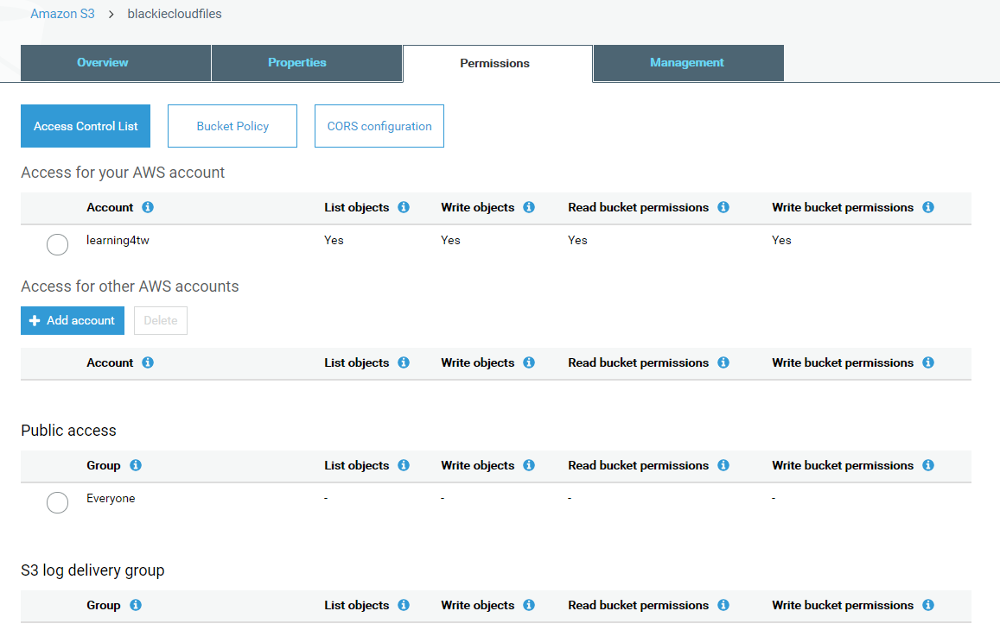
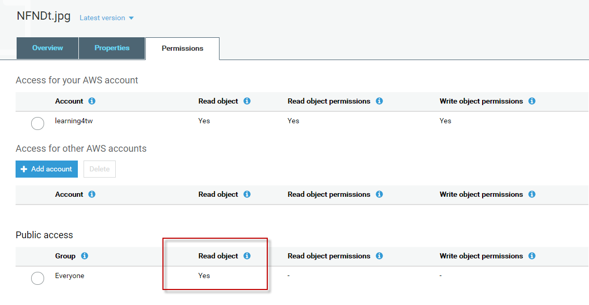
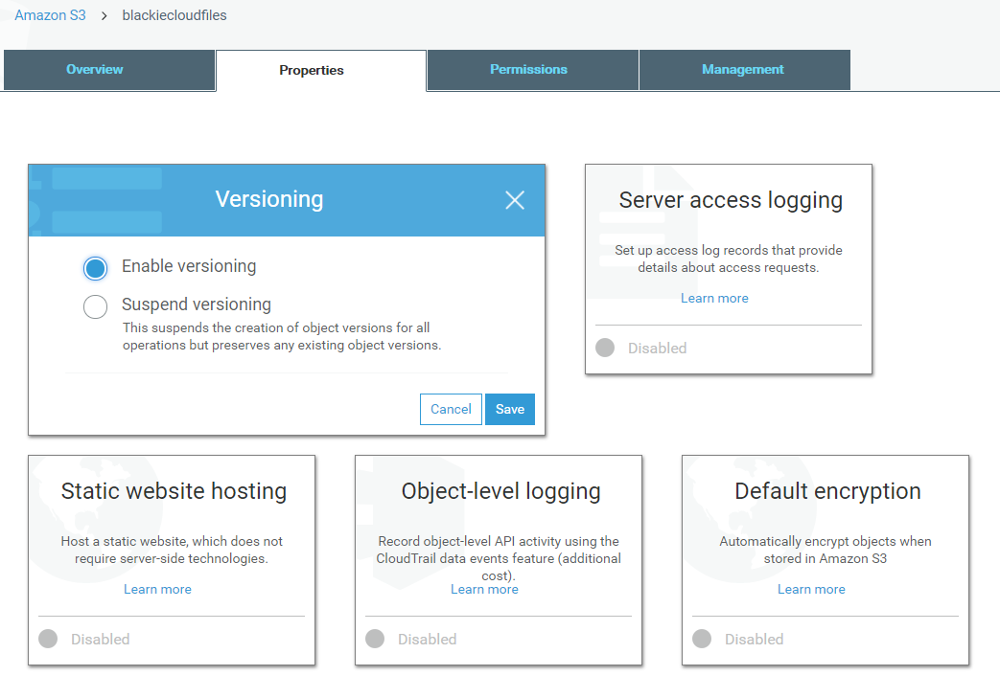
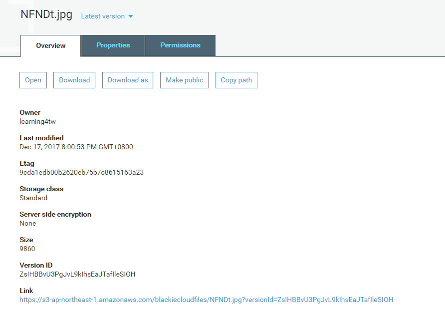

30天鐵人賽介紹 AWS 雲端世界 - 5: 物件檔案儲存服務 - Simple Storage Service (S3)
What is S3
Simple Storage Service (S3) 是 AWS 上面廣為人知且應用廣泛的服務，由於能應用的情境相當多，只要是需要將檔案獨立成一份份作為儲存至雲端上的情境幾乎都與他有關，也可以視為 AWS 的骨幹服務之一。

這邊顯示幾種不同類型的資料與其在 AWS 服務上對應的類型：
S3 服務的特性：
- S3是物件檔案儲存服務(key-value，但有版本的觀念)
- 單一檔案大小上限可以從 0 Byes 到 5 TB
- 沒有容量上傳上限
- 上傳的檔案會被分配到指定的儲存槽(Bucket)中
- 檔案一律存在 bucket 中 (Bucket 裏面無法再放一個 bucket，但可以放 folder)
- s3 有命名空間的概念，上傳的檔案都會在對應的命名空間下。若有開放對外存取則可直接透過網路連結取得該資源。
- s3 當上傳成功會獲得 HTTP Status 為 200 的請求回應，表示上傳成功。
- 可以針對檔案的生命週期做管理：設定前 30 天在正常的 standard tier, 接著 30 天移到另外一個 IA(Infrequently Accessed) tier, 90 天後進行 archive
S3的收費方式要考量三點：
- 容量(Storage)
- 造訪的請求數量(Request)
- 容量管理費用(Storage Management)，如 analysis, tagging, inventory check
- 資料轉換費用(Data Transfer)，資料存入 S3 免費，而往其他地方傳送則需要付費(即使是 region 之間互傳也要收錢)
- S3 Transfer Acceleration 費用
其中 S3 Transfer Acceleration 會在之後的CDN應用一併介紹。
S3 Storage and Ties
S3 Standard : 持久的, 立即可用的, 頻繁存取的
99.99% availability, 99.999999999% durability
S3 Infrequently Accessed(IA) : 持久的, 立即可用的, 不頻繁存取的
與S3 Standard 一樣的服務水準但較低的儲存費用。當有請求時，有額外的資料取用費用。
S3 Reduced Redundancy Storage : 資料可以很簡單重新產生的，如圖片的縮圖
99.99% availability, 99.99% durability
Glacier : 資料僅需長久保存，平時不會需要調用。
非常便宜，調用該資料可接受３－５小時的等待時機。
Glacier 其實不是屬於 S3 的一部分，但因為有相關聯這邊一起提出比較。但在下一篇我們會介紹一下這項服務。
詳細比較可以參考官方資料
Data Consistency Model for S3
S3的資料一致性要分兩種，新增與更新。
- 做更新時取得的回應必定為當前最新更新的內容，新增檔案後馬上就可以讀取
- 若直接透過 read 取得回應則無法確保資料新舊
- 若有更新資料則會透過最終一致性進行更新，但無法確保何時會完成全部節點的更新
- 若進行資料刪除，則在完全刪除前有可以部份節點還是保留該資料，但會透過最終一致性進行刪除。
而刪除資料我們也可以透過 remove maker 的方式來幫我們設定一個未來的刪除日期，等時間到了就會啟用刪除事件。
而在實務管理上，S3 更常與Glacier合作進行資料的長久保存，而真正超出保存期限的資料才從 Glacier 上面移除：
對於S3的版本控制與生命週期，可以參考這個影片的解說，會有一個更清楚的了解。
這邊節錄影片的說明：
這邊設定了超過三十天就進入到 Glacier，然後如果超過365天就直接標示移除，永久刪除不保存。
Key, Value, Versioning and Metadata
Key(name)
檔案的名稱
Value(data)
檔案的內容本體
Vesion ID
檔案版本控管ID
Metadata
檔案的描述資料，使用者可以自訂客製化的 metadata，藉此來為 object 標註不同的屬性值
Subresources
- Access Control Lists (用來做細部的存取控管)
- Torrent (S3 支援 bittorrent protocol)
Hands on Lab
首先我們依樣先登入 AWS Console
然後在中間的輸入框查詢s3，或是透過左上角的 Services 點選到 Storage 下的 S3 服務：
當進入 S3 服務後就可以看到官方解說如何透過三步驟使用該服務：
1. Create Bucket
首先先建立一個資料槽，填入對應的資料，這邊要注意名稱可能會被他人所取用了，記得要申請時填寫一個比較特別的名稱：
接著會詢問是否要關閉一些功能，包含版本管控、資料異動的紀錄、標籤與權限修改的紀錄等，都是蠻實用的功能。預設這些服務都是關閉的。
然後會問你該資料槽的權限是否要異動或是新增給其他使用者：

最後確認無誤後按下新增即可看到頁面已經添加了一個新的資料槽:

2. Upload Data
當我們點選剛進入資料槽後會看到四個類別選項：
Overview
從此處可以進行檔案新增或是增加分類資料夾
Properties
這邊可以開啟或是關閉剛剛設定的功能。


Permissions
這邊可以設定資料槽的存取權限

Management
這邊可以設定資料槽的生命週期的處理方式與其他功能設定
這邊我們先從第一個Overview新增一個檔案，並在選擇後直接按下左邊的上傳(即套用預設設定)

點選該檔案後可以看到檔案的連結，https://s3-ap-northeast-1.amazonaws.com/blackiecloudfiles/NFNDt.jpg：
但當點選後卻出現下面的畫面告訴我們權限不足無法瀏覽該檔案：
3. Setup up your permissions
接著我們進去設定剛剛上傳檔案的權限設定處，將他開啟為公開對外的狀態：

然後返回先前的檔案連結，https://s3-ap-northeast-1.amazonaws.com/blackiecloudfiles/NFNDt.jpg，即可瀏覽該檔案了：
Versioning control
接著我們開啟儲存槽版控的功能：

而當我們換一張圖片用同樣檔名再上傳一次時，可以看到該檔案有了多個版本的選項：

當URL中的versionId為空值，則預設會連結至當前最新版本。